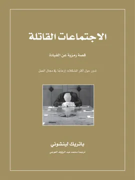

الاجتماعات القاتلة: قصة رمزية عن القيادة تدور حول أكثر المشكلات إزعاجًا في مجال العمل

قراءة عربية أصلية محددة النطاق في الصفحات 9 إلى 14 من ملف PDF المرتبط، وليست تلخيصا كاملا للكتاب. نناقش ما تدعمه هذه المقاطع فقط.
الاجتماعات القاتلة: لو لم أحضرها لأحببت عملي
يفتتح لينشوني مقدمته بعبارة سمعها مرارًا من القادة: «لو لم يكن عليَّ حضور الاجتماعات، لأحببت عملي أكثر»، وقد خلص إلى أنها رثاء لثقافة العمل. فتخيل جراحًا يقول لممرضة: لو لم يكن عليَّ إجراء عمليات لأحببت عملي حقًا؛ إنه أمر مضحك، لكن هذا ما نفعله عندما نشكو من اجتماعاتنا. فالاجتماعات جزء كبير من عمل القادة، وهي أقرب شيء إلى غرفة العمليات أو خشبة المسرح؛ فيها يقرر قادة الدولة إعلان الحرب من عدمه، ويبحث الرؤساء التنفيذيون طرح علامة تجارية أو إغلاق مصنع. ويسأل: هل نستطيع قيادة مؤسساتنا بنجاح إذا كنا نكره الاجتماعات؟ فالسيئة منها تقود إلى القرارات السيئة. ومع ذلك فالأمل موجود: بنظرة مختلفة يمكن تحويلها من نشاط ممل إلى مثمر بل محفز، والتفوق على المنافسين المهدرين للوقت والحماس. ولبيان ذلك كتب قصة خيالية عن مسئول تنفيذي يواجه صراعًا مع الاجتماعات. وفي مطلع القصة يشعر كيسي ماك دانيال بتوتر شديد: بعد عشر دقائق يبدأ الاجتماع، وأداؤه في الساعتين القادمتين سيحدد مصيره ومصير الشركة التي بناها من الصفر، وتساءل: «كيف تدهورت حياتي بهذه السرعة؟».
زاوية وحدود القراءة
قراءة موجزة من ص ١٣ إلى ص ١٨ من أصل ٢٥٨ صفحة، تعرض مقدمة الكتاب ومطلع القصة، لا الكتاب كاملًا.
الطبعة والقراءة
هذه الترجمة العربية صادرة ومتاحة مجانًا بموجب اتفاق قانوني بين مؤسسة هنداوي وجون وايلي أند صنز، إنك. حقوق الترجمة محفوظة لمؤسسة هنداوي.
تنزيل PDF المجاني ↓ القراءة والمصدر الرسمي ↗